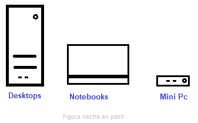

Hoy en día es muy común tener una computadora en casa. Estas ser de distintos tipos:
Las desktops son generalmente las más baratas… (se sigue contando cosas)
Siempre es bueno empezar por el uso que se le va a dar. Si uno la va a usar para hacer trabajos 3D necesita un hardware más potente. Si la quiere para contestar mails y navegar por internet necesita una hardware menos potente…